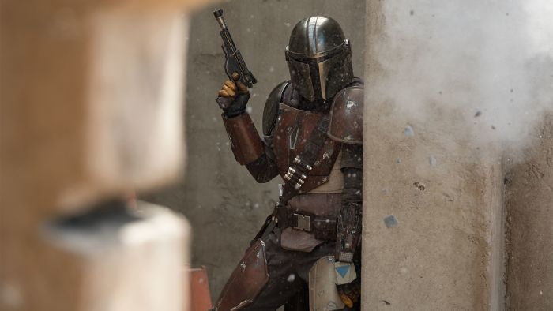

1° TEMPORADA
Resumen:
En la primera temporada de The Mandalorian , Din Djarin , un cazarrecompensas mandaloriano,
acepta una misión para capturar un objetivo que resulta ser Grogu, un niño sensible a la Fuerza.
Decidido a protegerlo, Mando se enfrenta a enemigos y alianzas inesperadas mientras intenta mantenerlo a salvo.
En el final de temporada, debe enfrentarse a Moff Gideon, un ex-oficial imperial
que quiere capturar a Grogu, revelando además el Darksaber, una legendaria arma mandaloriana que anticipa conflictos futuros.